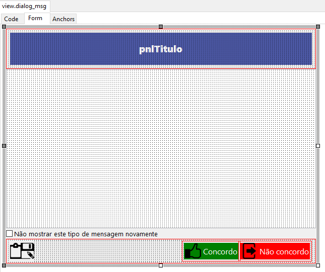

A Importância da Padronização com Modelos
Em ambientes de desenvolvimento colaborativo, a consistência visual e funcional é fundamental. Modelos (templates) são formas práticas de reutilizar formulários e estruturas lógicas em diferentes projetos, evitando que a equipe "reinvente a roda" a cada nova janela de diálogo ou módulo de sistema.
Seja para uma janela de diálogo padrão, um módulo de consulta REST ou uma estrutura de biblioteca (DLL), o uso de modelos garante que os atributos essenciais e as extensões necessárias sejam preservados, economizando tempo precioso de codificação.
Criando Modelos Informais para a IDE
Existem duas formas de trabalhar com modelos no Lazarus: informal e formal. Neste artigo, focaremos na maneira informal, que é intuitiva e extremamente útil para bibliotecas de componentes e formulários rápidos.
Como funcionam os modelos informais
O método informal consiste em manter uma estrutura de diretórios organizada (local ou em rede) onde todos os formulários reutilizáveis são armazenados de forma centralizada.
Para utilizar, basta seguir estes passos técnicos:
- Mantenha uma pasta central de modelos com seus arquivos
.pase.lfm. - Ao iniciar um novo projeto, copie os arquivos desejados para o diretório do projeto atual.
Integrando o Modelo ao Projeto
Após copiar os arquivos fisicamente, você deve informar à IDE que eles fazem parte do projeto atual através do Project Inspector:
- Abra o Project Inspector (Menu Project | Project Inspector).
- Clique na opção Add... e selecione o arquivo de modelo copiado.
Uma vez adicionado, o formulário aparecerá na lista de unidades do projeto e poderá ser instanciado normalmente via código ou através do Object Inspector.

Conclusão
O método informal de modelos é a porta de entrada para a produtividade no Lazarus. Ele é ideal para formulários individuais e componentes específicos que precisam de mobilidade entre projetos sem a complexidade de criar pacotes (packages) formais.
Embora eficiente para partes isoladas, para projetos inteiros que servem de base, o Lazarus oferece os "Modelos Formais", que veremos detalhadamente em nosso próximo guia técnico.